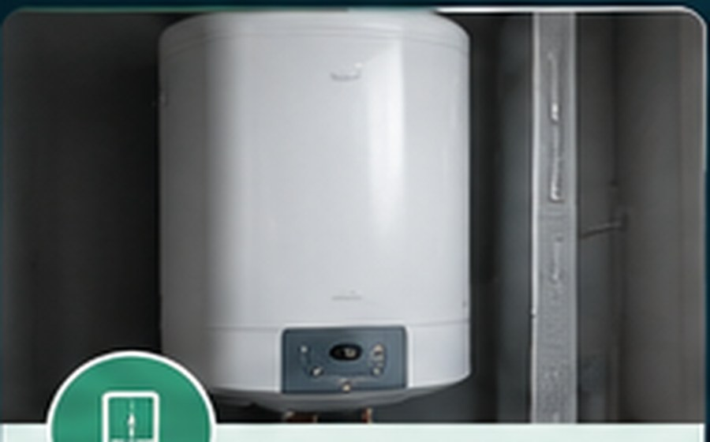
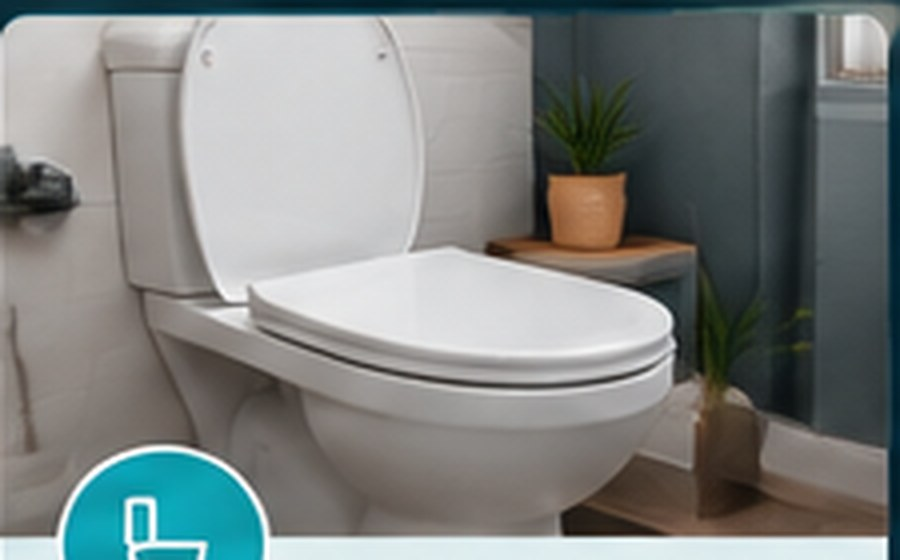
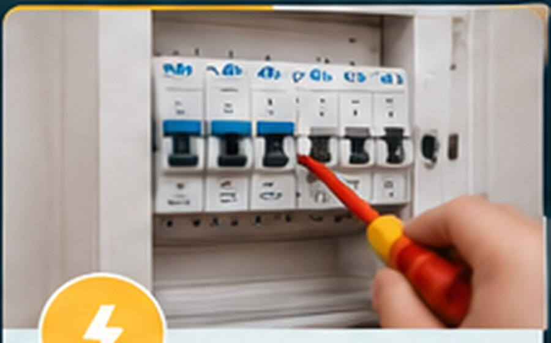
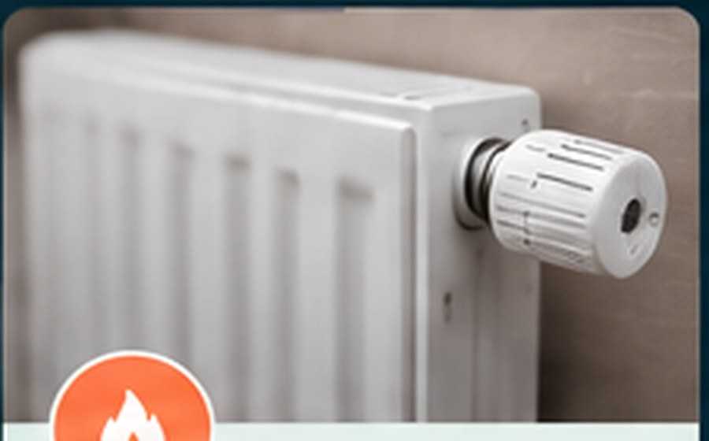

Dépannage habitat à Lunel : une urgence, une solution.
Fuite d’eau, chauffe-eau en panne, WC qui coule, petit problème électrique ou dégâts des eaux : décrivez la situation et obtenez une réponse rapide selon disponibilité.
Une urgence ? On intervient rapidement.
Une fuite, un chauffe-eau en panne, un WC qui fuit ou un souci électrique ? Appelez directement ou choisissez le service concerné.
📞 Appeler maintenantDes interventions concrètes, du dépannage à la remise en état.
Chaque carte est entièrement cliquable. Les pages détaillées expliquent les situations prises en charge et permettent de demander rapidement une intervention.
Recherche de fuite
Localisation, diagnostic, réparation et compte-rendu selon besoin.

Chauffe-eau
Panne, fuite, groupe de sécurité, entretien et remplacement.

WC
Mécanisme, flotteur, fuite, débouchage et remplacement.

Petit dépannage électrique
Diagnostic, remplacement d’appareillage et petites remises en état.

Dégâts des eaux
Traitement de la cause puis remise en état : placo, plafond, peinture, sol.
Rénovation intérieure
Salle de bain, cuisine, placo, peinture, parquet et petits travaux multi-lots.
Lunel au centre, Montpellier et Nîmes dans le secteur.
La zone exacte dépend du type d’intervention et des disponibilités. Lunel et les communes proches restent le secteur principal.
De Lunel vers Montpellier — Nîmes
Interventions sur Lunel, Marsillargues, Saint-Just, Lunel-Viel, Aimargues, Gallargues-le-Montueux, Aigues-Mortes, La Grande-Motte et communes voisines. Montpellier et Nîmes sont étudiées selon le dépannage ou le chantier.
Un interlocuteur local, des explications claires.
Une réponse rapide selon la situation et les disponibilités.
Plomberie, petits dépannages électriques et remise en état intérieure.
Basé à Lunel, avec déplacements sur le secteur Montpellier–Nîmes.
Évaluation et devis avant les travaux concernés.
Avant de nous appeler.
Intervenez-vous en urgence ?
Oui, selon la nature du problème et les disponibilités du moment. Le plus rapide est d’appeler directement.
Intervenez-vous à Montpellier et Nîmes ?
Oui, selon le type d’intervention, la distance et les disponibilités. Lunel et les communes proches restent le secteur principal.
Faites-vous la remise en état après un dégât des eaux ?
Oui, après traitement de la cause : placo, plafond, enduit, peinture, revêtement de sol et autres travaux intérieurs peuvent être étudiés.
Le devis est-il réalisé avant les travaux ?
Le principe est de présenter le devis avant les travaux concernés, sauf action immédiate convenue pour sécuriser une situation.
Besoin d’un dépannage ou d’un devis ?
Appelez directement ou envoyez votre commune, votre problème et quelques photos si possible.